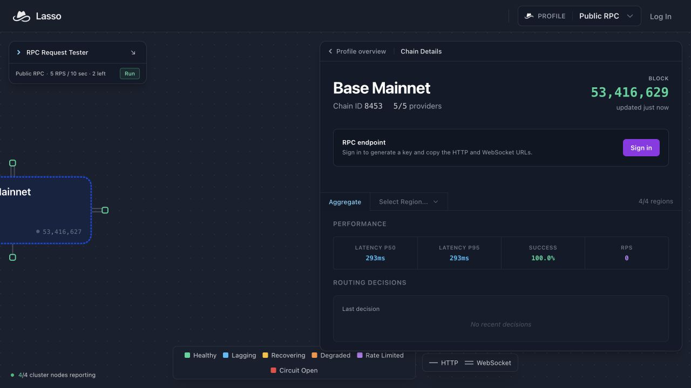

QWE POIDH · BASE #1515 · 2 NOVEMBER 2026
Lasso for an agent that must recover its event history
Hands-on free-profile test, captured responses and an offline audit. GitHub: THEC1-zc · Farcaster: @thec1.
First impression: getting a dedicated agent key was straightforward. I would use the public HTTP pool for exploratory reads and bounded backfills, with an independent check for receipt-sensitive work. I would keep reconnection, checkpointing and reorg reconciliation in the application. This experiment does not establish production reliability.
A real QWE workload
QWE tracks onchain task submissions and checks receipts before calling work complete. A restarted watcher must recover its history. We exercised Base USDC Transfer logs as an active event source, using a fresh dedicated account, only /profile/public, and no funded API calls. The official repository was starred.
What the saved capture shows
Captured 11:56:42–11:57:55 UTC. The comparison covers Base blocks 53,415,633–53,415,661 (29 blocks). Lasso WebSocket logs and newHeads were subscribed, the client requested a close, waited, then established a new connection. HTTP backfill was compared with PublicNode.
| Measurement | Observed |
|---|
| Independent canonical-query logs | 2,703 |
| Lasso public HTTP backfill logs | 2,703 |
| Full normalized event payload agreement | 2,703 / 2,703 |
| Raw live notifications / within compared range | 535 / 382 |
| Compared logs absent from live capture | 2,321 |
| In-range live duplicates / extra identities | 0 / 0 |
| Unique union after adding HTTP backfill | 2,703 |
Identity: (blockHash, transactionHash, logIndex). The supervisor also compared address, topics, data, block number and transaction index, not just counts. One Lasso HTTP query took 637 ms; the direct query took 355 ms. These are single observations, not a speed ranking.
What these numbers do not prove
The 2,321 absent live logs are not a Lasso loss rate. Timers began at socket construction, before subscription acknowledgments; close handling was asynchronous and independent RPC reads added delay. We cannot assign every absence to one exact offline interval. The final two heads were excluded, but the query was not L1-finalized. No provider failover, durable cursor or reorg recovery was tested.
Specific feedback and adoption decision
The public dashboard makes provider topology and block freshness easy to inspect. After creating an agent key through the documented API, the guest dashboard still asks me to sign in to generate a key. A small “already have an agent-created key?” handoff link would connect those two onboarding paths without encouraging users to paste secrets into screenshots.
The checkpoint requirement is already documented. I would add a directly runnable companion example showing subscription acknowledgment time, persisted cursor, separate backfill counters and identity deduplication. Our original capture script is an in-memory demonstration, not that complete production implementation. Existing entries already study long-lived WebSocket losses; this entry contributes a checkable application-recovery fixture and a concrete integration decision.
Actual dashboard screenshot
This is the public Base dashboard viewed after the API test, not private account usage or a visualization of the captured window.

Audit and reproduce
Summary and limitations · Original public-chain capture, gzip JSON · Offline audit · Original capture script, using your own environment key
python3 verify-capture.py capture.json.gz
LASSO_RPC_KEY=your_own_key node reproducer.mjs
The script uses only public-profile endpoints. Its intentionally simple timing limitations are preserved so the source explains this exact capture. A subsequent attempt to improve timing failed before producing usable comparison data and is not included in these numbers.
Sources: Agent onboarding and free-profile instructions · Checkpoint and reconnection documentation.